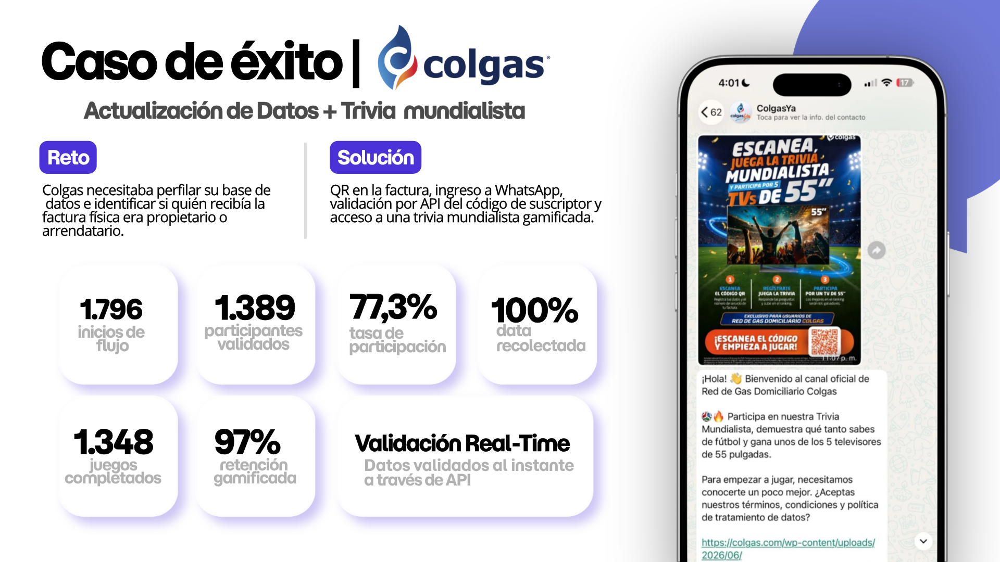
WhatsApp + gamificación + API
Actualización de datos y trivia mundialista
1.796
inicios
1.389
validados
77,3%
participación
1.348
juegos
Credenciales para Colgas
Level integra planeación, estrategia, creatividad, producción, operación, conversación y pauta para construir comunidades digitales activas, relevantes y en constante evolución.
Nuestra trayectoria
Desde 2017 hemos acompañado más de 55 marcas con estrategia, creatividad, producción y operación digital. Hoy estamos cerca de completar una década construyendo relaciones que evolucionan con el negocio.
2017
2018
2019
2020
2021
2022
2023
2024
2025
2026
años
marcas
campañas desarrolladas
Ya trabajamos juntos
Level no empieza desde cero. Ya conocemos al equipo de mercadeo, sus dinámicas de trabajo y las necesidades de diferentes unidades de negocio.
Ese conocimiento reduce la curva de aprendizaje, acelera la implementación y nos permite concentrarnos antes en optimizar resultados.
Campaña mundialista
Seis meses construyendo una campaña de cara al evento deportivo más importante del año.
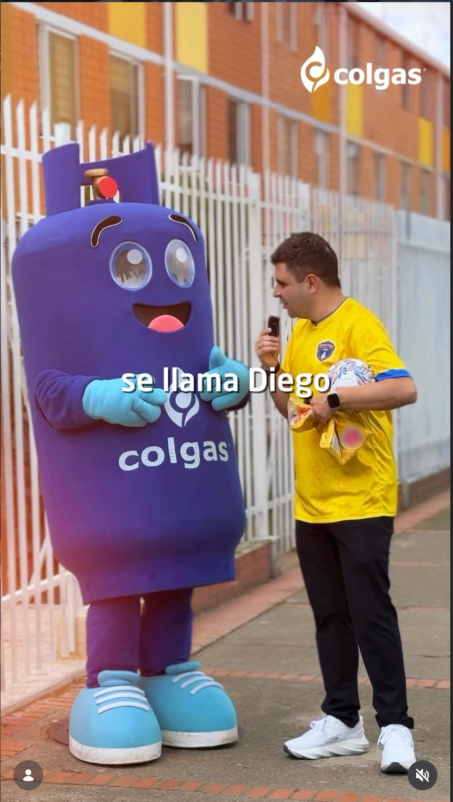
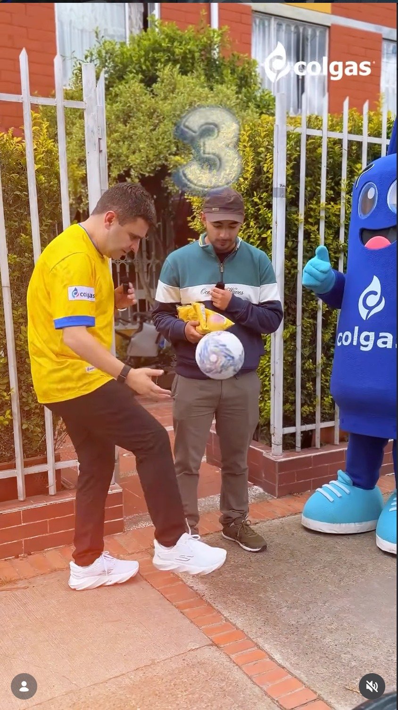
Integramos a Juan Felipe Cadavid en el ecosistema de Colgas mediante contenidos, activaciones y una narrativa sostenida alrededor del fútbol y la marca.
Contenido editorial
Acompañamiento estratégico, planeación y producción.
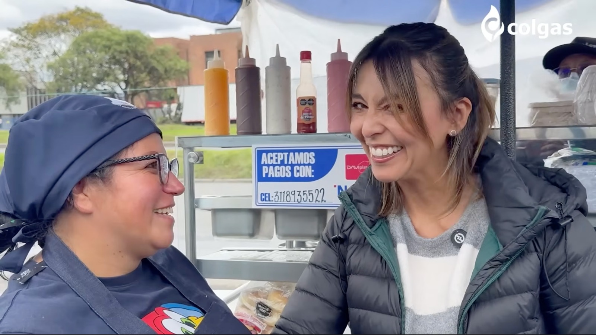
Planeamos y producimos la participación de Colgas dentro del podcast de Cristina Estupiñán, conectando el contenido editorial con los objetivos de comunicación de la marca.
Producción de podcast
Planeación, grabación y edición de la tercera temporada.
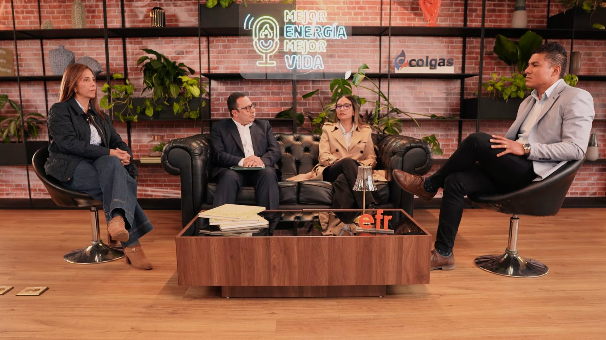
Acompañamos todo el proceso de producción de la tercera temporada, desde la planeación temática hasta la grabación y edición de cada entrega.
Tecnología y conversión
Dos implementaciones para perfilar usuarios, actualizar datos y captar prospectos.

WhatsApp + gamificación + API
inicios
validados
participación
juegos
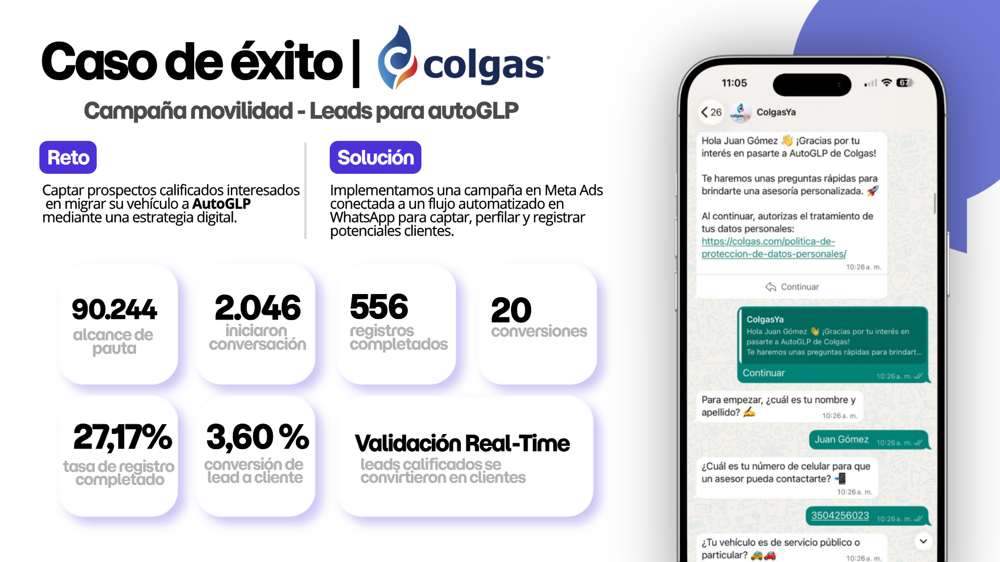
Meta Ads + WhatsApp
alcance
conversaciones
registros
conversión
La ventaja de continuar
Menos tiempo entendiendo la operación. Más tiempo creando, implementando y mejorando resultados para Colgas.
Experiencia integral
Nuestra experiencia cubre el ciclo completo: planeación, producción multiplataforma, administración de canales, escucha, paid media y analítica.
Planeación trimestral, líneas narrativas, calendario mensual y optimización basada en KPIs.
Piezas gráficas, reels, video horizontal y vertical, motion graphics y contenidos con IA.
Planeación, segmentación, montaje, monitoreo, optimización y reportes accionables.
Community management, tendencias, social listening, alertas y real time marketing.
Casos de éxito
Relaciones de largo plazo, ideas memorables y resultados construidos con estrategia, creatividad y ejecución.

Wplay es una de las casas de apuestas más grandes del país. Level lidera su ecosistema digital desde hace ocho años.
usuarios únicos potenciales
impactos potenciales
registros en plataforma
First Deposit reportado
La apuesta memorable
Creamos una apuesta con una figura reconocida en Colombia y el mundo: René Higuita se cortaría el pelo si la Selección no ganaba la Copa América. Level desarrolló el concepto, la planeación, la estrategia de influenciadores, la creatividad, la producción y la conversación digital. El lanzamiento fue tendencia durante cuatro horas.
Una operación que continúa creciendo
de relación continua
contenidos cada mes
ecosistema digital
Planeación, estrategia, creatividad, producción, operación digital e influencer marketing para todos los canales de Wplay.
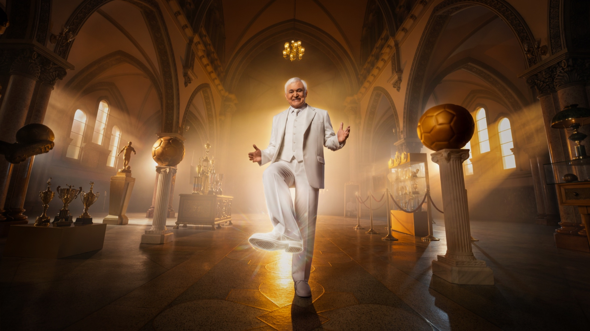
Level lideró la amplificación digital del lanzamiento de la nueva campaña de Wplay: selección y coordinación de 26 creadores, ejecución simultánea de contenidos y despliegue de formatos para convertir el estreno del comercial en conversación.
Ver informe completo ↗reproducciones
interacciones
creadores coordinados
COP de CPV promedio
Amplificación con creadores
1,05 MMeta: 1 millón de reproducciones
Contenido de La Liendra
2,1 MMeta: 500.000 reproducciones
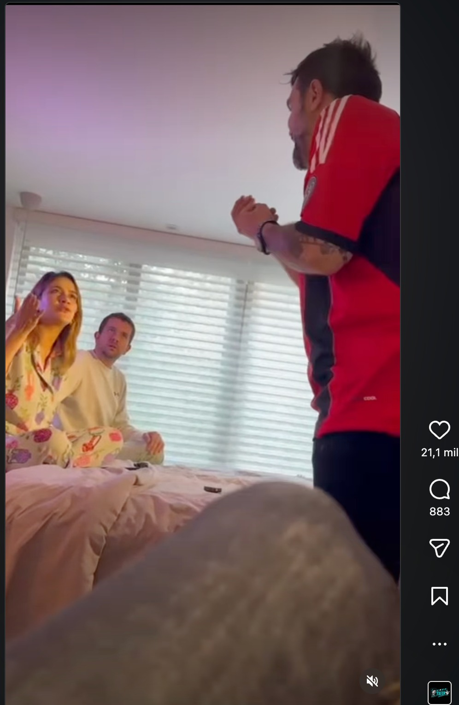
Hisense, patrocinador del Mundial de Clubes, necesitaba amplificar su discurso de marca con un presupuesto limitado. Creamos una serie digital de ocho capítulos con creadores de contenido y una historia diseñada para vivir en reels, TikTok, historias y YouTube.
visualizaciones
interacciones
acciones publicadas
2,6 veces la tasa objetivo.
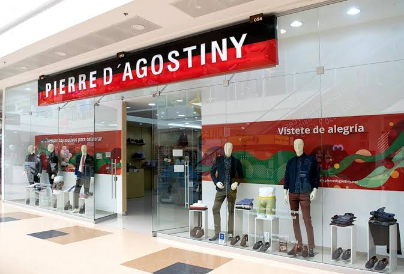
Durante 2025 integramos estrategia de contenido, producción, gestión de comunidad y pauta de alcance. Instagram pasó de 14.133 a más de 20.000 seguidores, mientras Facebook, Instagram y TikTok ampliaron de forma sostenida la visibilidad de la marca.
visualizaciones en Facebook
visualizaciones en Instagram
visualizaciones en TikTok
La comunidad respondió
Facebook alcanzó 31.600 interacciones en diciembre, Instagram creció 115,4% en interacciones y los compartidos en TikTok aumentaron 515,1%.
Creamos y acompañamos lanzamientos editoriales de creadores de contenido como Aída Merlano, Cintia Cossio, Bryan Mantilla y Julián Valencia.
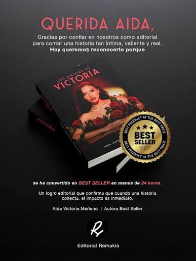
Victoria
Aída Victoria Merlano
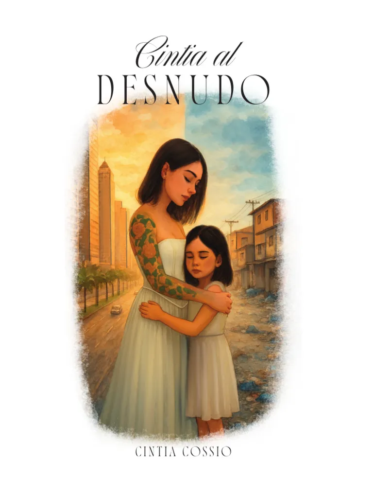
Cintia al desnudo
Cintia Cossio

Las inversiones fallidas de Brayan
Bryan Mantilla
Lanzamiento destacado
Más de 50.000 usuarios compraron el e-book en aproximadamente mes y medio, con un valor unitario de $35.000 COP y una inversión de pauta de $5 millones COP.
usuarios compradores
valor por e-book
valor bruto reportado
inversión en pauta
Nuestra propuesta para Colgas
Planeamos, creamos, producimos, publicamos, escuchamos y optimizamos. Un solo equipo conecta la estrategia de marca con la operación diaria y convierte los datos en decisiones.
Inversión mensual
Fee mensual de servicios profesionales. La inversión directa en medios se administra de manera independiente.
Ruta trimestral, parrillas mensuales, líneas narrativas y coordinación con las campañas corporativas y comerciales.
Conceptos, piezas gráficas, video, animación, inteligencia artificial y contenidos diseñados para cada plataforma.
Administración de canales, publicación, community management, cubrimientos, tendencias y escucha activa.
Planeación de medios, segmentación, implementación, monitoreo, ajustes continuos y lectura de resultados.
Producción mensual
Volumen mínimo incluido
piezas gráficas y adaptaciones
videos con animación 2D y motion
contenidos animados con IA
videos tipo reel en tendencia
cubrimiento presencial mensual
entrega del reel de cubrimiento
Diseño UX/UI, maquetación y desarrollo.
Entrega incluida en cada cubrimiento.
Bonus incluido
Una lectura inicial del ecosistema para establecer prioridades, oportunidades, indicadores y una hoja de ruta compartida.
Cobertura
Bogotá, Medellín, Cali, Barranquilla, Cartagena y Bucaramanga, con coordinación de equipo, producción y logística.
Dedicación base
Así trabajaremos
La estrategia parte de los objetivos de Colgas, se convierte en una hoja de ruta trimestral y evoluciona con el desempeño real de los contenidos, las campañas y las audiencias.
Conocemos las UEN, objetivos, públicos, aprendizajes, restricciones y calendario.
Definimos KPIs, narrativas, prioridades, campañas y plan de trabajo trimestral.
Producimos, publicamos, pautamos, escuchamos y optimizamos de manera continua.
Consolidamos aprendizajes y ajustamos el siguiente ciclo con información real.
Validez
30 días desde la emisión
Forma de pago
Mensual anticipada contra factura
Inicio
Tras la aprobación y el kickoff
Célula dedicada
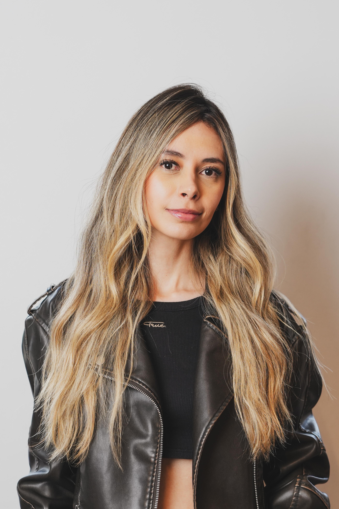
Directora de Cuenta
Comunicadora social y periodista con 7 años liderando estrategias de comunicación digital y campañas de pauta, con experiencia en LinkedIn. Coordina prioridades, equipos y resultados.
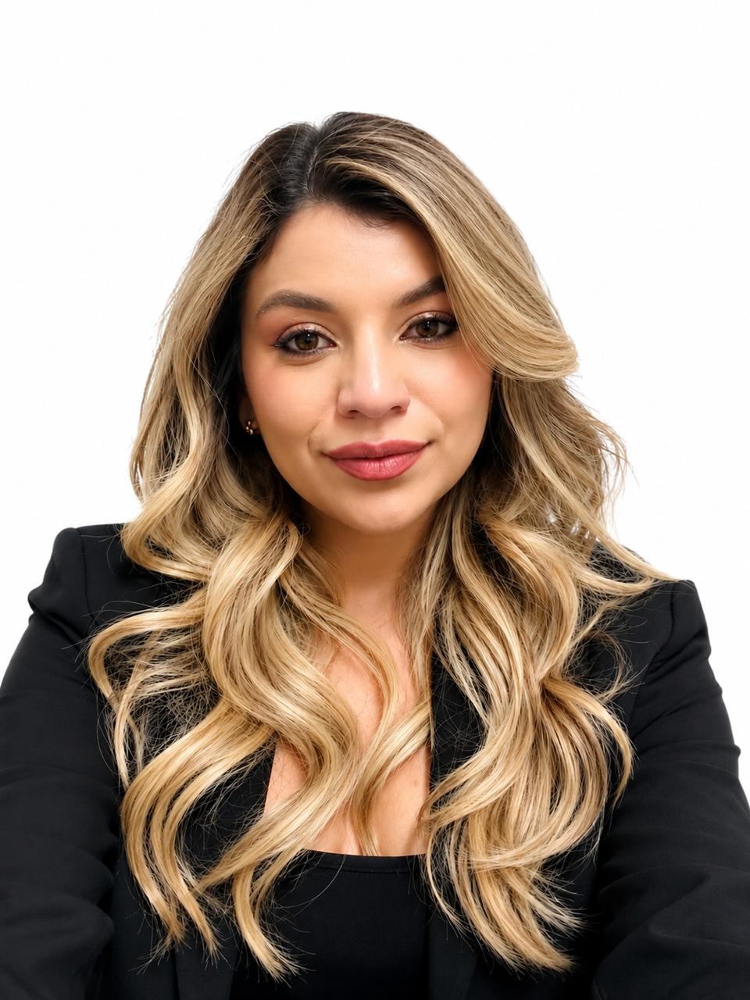
Media Planner y Estratega Digital
Profesional en marketing y publicidad especializada en estrategia digital, audiencias y optimización de campañas. Convierte objetivos de negocio y datos en planes de medios accionables.
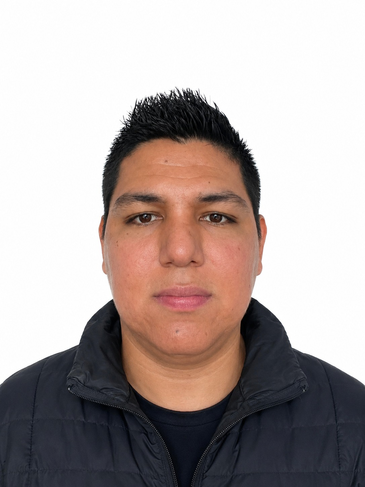
Director Creativo
Comunicador social y periodista con 9 años de experiencia en marketing. Lidera estrategia y creatividad para marcas de diferentes industrias, convirtiendo objetivos en ideas relevantes.
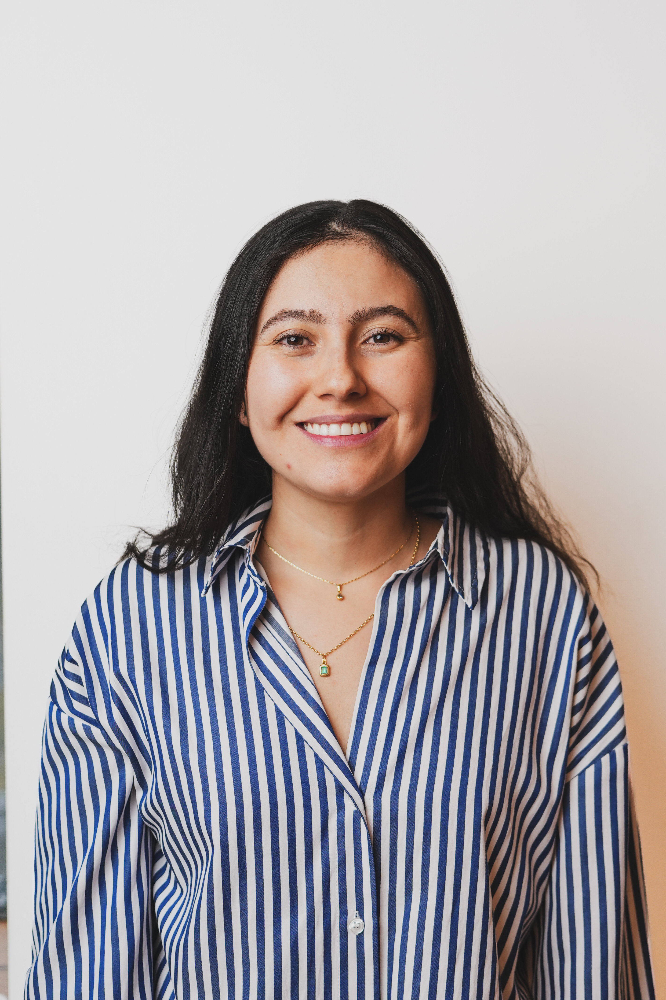
Diseñadora
Diseñadora industrial con 6 años creando identidades y sistemas visuales para marcas digitales, con énfasis en nuevos formatos y adaptación multiplataforma.
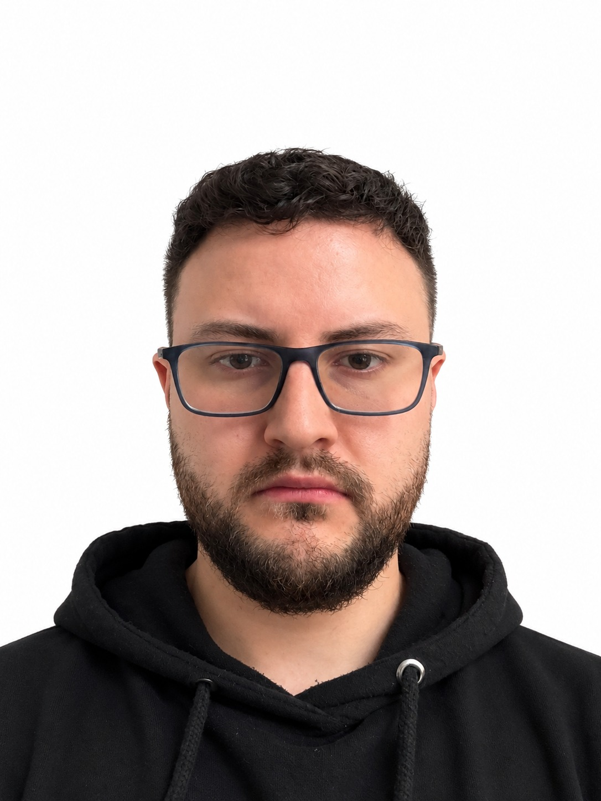
Editor Audiovisual
Comunicador social y periodista con más de 5 años de experiencia en edición de audio y video. Integra herramientas de inteligencia artificial a los procesos de producción audiovisual.
Community Manager
Comunicador social y periodista con 2 años de experiencia en community management, creación de contenidos y edición de video para ecosistemas digitales.
Equipo dedicado a la planeación, creatividad, producción, operación, pauta y optimización del ecosistema digital de Colgas.
Level × Colgas
Estamos listos para convertir la estrategia digital de Colgas en una presencia activa, coherente y medible para cada unidad de negocio.